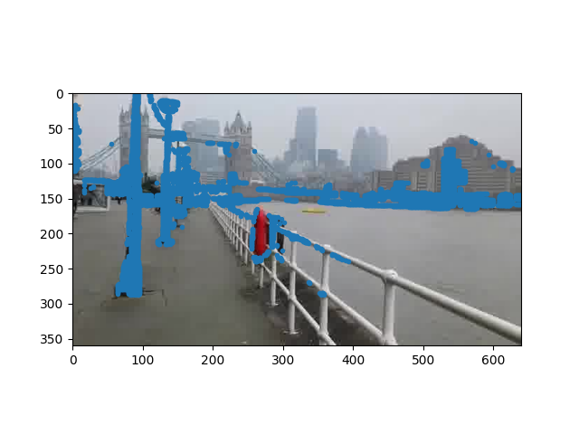
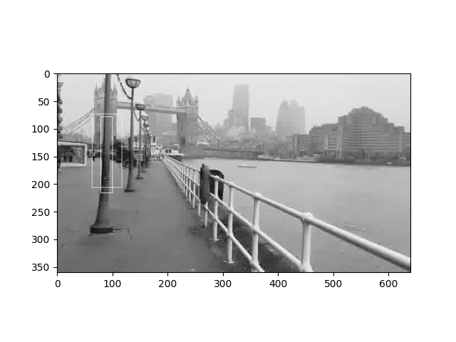
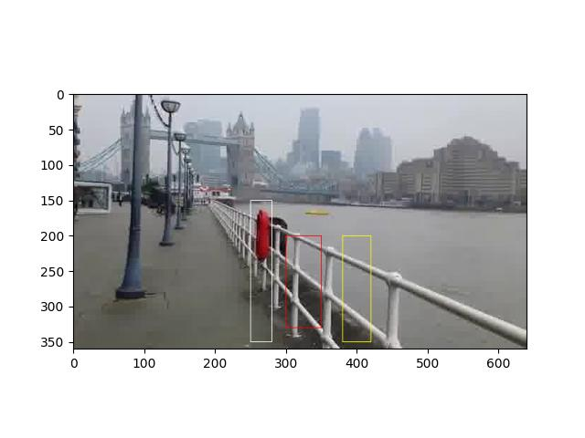

Renk Nicemlemesi, Posterleme (Color Quantization, Posterization)
Bir resimdeki en yaygın renkleri bulmak için [2],
from thief import ColorThief
color_thief = ColorThief('t00100.jpg')
colors = color_thief.get_palette(color_count=20)
import matplotlib.colors as mcolors
colors = [np.array(x)/255. for x in colors]
my_cmap = mcolors.ListedColormap(colors)
plt.figure(figsize=(20, 0.5))
plt.pcolormesh(np.arange(my_cmap.N).reshape(1, -1), cmap=my_cmap)
plt.gca().yaxis.set_visible(False)
plt.gca().set_xlim(0, my_cmap.N)
plt.savefig('vision_50colreg_02.png')Şimdi resmin yaygın renklerinden birinin (üstteki renklerde en sağdaki kırmızı mesela) resmin hangi piksellerine en yakın olduğunu bulalım. Basit uzaklık ölçüsü kullanarak H,S,V renk üçlüsü üzerinden bir uzaklık hesaplayacağız, belli bir eşik değeri altında olan tüm pikselleri mavi ile göstereceğiz.
import colorsys, pandas as pd
from PIL import Image
A = np.array(Image.open('t00100.jpg').convert('HSV'))
A2 = A.reshape(640*360, 3)
idx = np.array([[j, i] for i in range(360) for j in range(640)])
df = pd.DataFrame(np.hstack((A2,idx)))
df.columns = ['c1','c2','c3','x','y']
colors2 = [x*255. for x in colors]
colors3 = [colorsys.rgb_to_hsv(x[0], x[1], x[2]) for x in colors2]
diff = (df[['c1','c2','c3']] - colors2[18]).abs().sum(axis=1)
df2 = df[diff < 100.]
A3 = np.array(Image.open('t00100.jpg'))
plt.imshow(A3)
plt.plot(df2.x,df2.y,'.')
plt.savefig('vision_50colreg_01.png')
Uzaklık için özellikle R,G,B değil H,S,V kullandık çünkü bu renk temsilinin uzaklık hesaplarında daha iyi işlediği biliniyor.
Bölgeler Eşit mi?
İki imaj bölgesinin birbiriyle aynı mı farklı mı olduğu sorusu imaj gruplaması (segmentation) ya da kümelemesi için önemli bir soru. Elimizde iki piksel grubu var, birinin diğerine ait olduğunu nasıl bileceğiz?
İlginç bir çözüm şu olabilir; piksel değerlerinin bir olasılık dağılımından örneklendiğini düşünmek, ve her iki bölgenin aynı dağılımdan gelip gelmediğini kontrol etmek [1, sf. 99].
Diyelim ki belli bir düzeni, yapısı olan bir imaj bölgesi aynı / sabit bir gri değerinin, istatistiki olarak bağımsız, 0-değerli Gaussian’dan gelen bir gürültü eklenmiş hali. Elimizde iki bölge var, \(R_1,R_2\), içlerinde sırasıyla \(m_1,m_2\) tane piksel değeri var. İki hipotez mümkün,
\(H_0\): Her iki bölge aynı objeye ait. Bu durumda her iki bölgenin tüm gri renk değerleri tek bir Gaussian’dan örneklenmiştir, ki bu Gaussian \((\mu_0,\sigma_0^2)\) olsun.
\(H_1\): İmaj bölgeleri / pikselleri farklı objelere ait. Bu durumda her piksel grubu ayrı Gaussian dağılımından geliyor, 1. bölge \((\mu_1,\sigma_1^2)\), 2. bölge \((\mu_2,\sigma_2^2)\).
Çoğunlukla bu parametreler bilinmez, maksimum olurluk (likelihood) kullanılarak veriden kestirilirek hesaplanır,
\[ \hat{\mu} = \frac{1}{n} \sum_{i=1}^{n}g_i \]
\[ \hat{\sigma} = \frac{1}{n} \sum_{i=1}^{n} (g_i-\hat{\mu})^2 \]
Bunlar temel istatistikten bildiğimiz şeyler. Simdi herhangi bir \(\mu,\sigma\) için bir piksel değeri \(g_i\)’in olasılığı
\[ p(g_i) = \frac{1}{\sqrt{2\pi} \sigma_0} \exp (- (g_i-\mu_0)^2 / 2\sigma^2) \]
\(H_0\) altında tüm pikseller aynı dağılımdan geliyor, o zaman tüm verileri gözönüne alan ortak dağılım,
\[ p(g_1,g_2,...,g_{m_1+m_2} | H_0) = \prod_{i=1}^{m_1+m_2} p(g_i|H_0)\]
\[ = \prod_{i=1}^{m_1+m_2} \frac{1}{\sqrt{2\pi} \sigma_0} \exp (- (g_i-\mu_0)^2 / 2\sigma_0^2) ) \]
\[ = \frac{1}{ (\frac{1}{\sqrt{2\pi} \sigma_0})^{m_1+m_2} } \exp \big[ - (\sum_{i=1}^{m_1 + m_2} (g_i-\mu_0)^2) / 2\sigma_0^2 \big] \]
\[= \frac{1}{ (\frac{1}{\sqrt{2\pi} \sigma_0})^{m_1+m_2} } \exp (- (m_1+m_2) / 2)\]
Çarpımın \(\exp\) içine nüfuz edince toplam olduğuna dikkat; ayrıca \(\exp\) içindeki \(\mu_0,\sigma_0\) nereye gitti? \(\mu_0,\sigma_0\) yerine onların maksimum olurluk kestirme formüllerini geçirince iptal olan terimlerden arta kalanın üstteki sonuç olduğunu görebiliriz.
\(H_1\) için durum farklı. Burada \(m_1\) tane piksel \((\mu_1,\sigma_1^2)\) dağılımına sahip 1. bölgeye, \(m_2\) tane piksel \((\mu_2,\sigma_2^2)\) dağılımına sahip 2. bölgeye ait. Bu hipotez altında ortak dağılım,
\[ p(g_1,g_2,...,g_{m_1+m_2} | H_1) = \frac{1}{ (\frac{1}{\sqrt{2\pi} \sigma_1})^{m_1} } \exp (- m_1/2) \frac{1}{ (\frac{1}{\sqrt{2\pi} \sigma_2})^{m_2} } \exp (- m_2/2) \]
Artık olurluk oranını hesaplayabiliriz,
\[ L = \frac{p(g_1,g_2,.. | H_1)}{p(g_1,g_2,.. | H_0)}\]
\[ = \frac{\sigma^{m_1+m_2}}{\sigma^m_1 \sigma^m_2} \]
\(\sigma_0, \sigma_1 , \sigma_2\) sırasıyla tüm \(m_1+m_2\) piksel, 1. bölgeden \(m_1\) piksel, 2. bölgeden \(m_2\) tane piksel kullanarak veriden yine maksimum olurluk ile kestirilecek. Eğer üstteki oran belli bir eşik değerinin altında ise bunu bölgelerin birbirine çok benzediğine yönelik bir kanıt olarak kabul edeceğiz, üstte ise farklı bölgeler olduğuna kanaat getireceğiz.
Örnek
Alttaki imajlarda iki bölge seçtik, iki bölge şunlar, biri iç dikdörtgen diğeri dış dikdörtgenin kesişme dışında kalan pikselleri (eğer kesişme yoksa her iki dikdörtgen ayrı ayrı),
from PIL import Image, ImageDraw
import pandas as pd
def draw_boxes(bs, imfile):
im = Image.open(imfile).convert('L')
draw = ImageDraw.Draw(im)
arr = np.asarray(im)
colors = ['white', 'yellow', 'white', 'white']
for i, b in enumerate(bs):
fr = b[0] # (x0, y0) original top-left
to = b[1] # (x1, y1) original bottom-right
x0_new = fr[0]
y0_new = arr.shape[0] - fr[1]
x1_new = to[0]
y1_new = arr.shape[0] - to[1]
left = min(x0_new, x1_new)
top = min(y0_new, y1_new)
right = max(x0_new, x1_new)
bottom = max(y0_new, y1_new)
bnew = [(left, top), (right, bottom)]
draw.rectangle(bnew, outline=colors[i % len(colors)]) # Use modulo for colors to avoid index error
plt.imshow(im, cmap=plt.cm.Greys_r)
box1 = [(79,144),(100,282)]
box2 = [(63,154),(117,287)]
draw_boxes([box1,box2],'t00100.jpg')
plt.savefig('vision_50colreg_03.png')
box3 = [(80,63),(95,260)]
draw_boxes([box1,box3],'t00100.jpg')
plt.savefig('vision_50colreg_04.png')
def get_pixels(box, im):
arr = np.array(im)
yw = arr.shape[0]
xw = arr.shape[1]
(bx1,by1) = box[0]; (bx2,by2) = box[1]
by1 = yw-by1; by2 = yw-by2
x1 = min(bx1,bx2); x2 = max(bx1,bx2)
y1 = min(by1,by2); y2 = max(by1,by2)
arr = arr[y1:y2, x1:x2]
return arr
im = Image.open('t00100.jpg').convert('L')
arr1 = get_pixels(box1, im)
arr2 = get_pixels(box2, im)
print (arr1.shape, arr2.shape)(138, 21) (133, 54)Olurluk oranının log’unu alarak hesap yapınca
def likratio(arr1, arr2):
# Corrected reshape calls: remove the extra '1'
tarr1 = np.reshape(arr1, (arr1.shape[0] * arr1.shape[1], 1))
tarr2 = np.reshape(arr2, (arr2.shape[0] * arr2.shape[1], 1))
arr0 = np.vstack((tarr1, tarr2))
s0 = np.std(arr0)
s1 = np.std(tarr1)
s2 = np.std(tarr2)
# Use len(tarr1) and len(tarr2) for their respective lengths
L = len(arr0) * np.log(s0) - (len(tarr1) * np.log(s1) + len(tarr2) * np.log(s2))
return L
L = likratio(arr1, arr2)
print (L)419.3404055757783İkinci resimde her iki dikdörtgen aynı direğin üzerinde, yani aynı obje üzerindeler. Bu durumda oranın daha düşük olmasını bekleriz,
arr21 = get_pixels(box1, im)
arr22 = get_pixels(box3, im)
L = likratio(arr21, arr22)
print (L)247.8054950906153Hakikaten de öyle.
Kovaryans Karşılaştırması
Bir bölgenin diğerinden farkını hesaplamak için bir ölçüt o bölgenin bazı özellikleri üzerinden kovaryansını hesaplamaktır. Mesela gri bazlı bir resmi düşünelim, \(x,y\) kordinatlarındaki grilik seviyesi \(I(x,y)\) ile veriliyor, bir bölge için şöyle bir ölçüt yaratabilirdik [4],
\[ F(x,y) = [\begin{array}{ccc} x & y & I(x,y) \end{array}]^T \]
Yani o bölge içindeki her \(x,y\) kordinatı ve o kordinatların grilik seviyesi bir vektör içine yazılıyor, bu vektörlerin tamamı bir matris oluşturuyor, 3 x N boyutlu bir matris ise, bu matris üzerinde kovaryans hesabı bize bir 3 x 3 matris verir. Bu matrisin o bölgeyi temsil ettiğini düşünebiliriz, çünkü kordinatlar ve grilik seviyeleri arasında bir bağlantı hesapladık sonuçta, koyu siyahlar ve bazı örüntüler içeren bir bölge çoğunluğu beyaz, farklı örüntü içeren bir bölgeden farklı sonuçlar verecektir. Sadece üstteki özelliklerle kısıtlı değiliz, farklı öğeler ekleyebilirdik, mesela renkli bir resim için,
\[ F(x,y) = [\begin{array}{ccccccccc} x & y & R(x,y) & G(x,y) & B(x,y) & | \frac{\partial I(x,y)}{\partial x} | & | \frac{\partial I(x,y)}{\partial y} | & | \frac{\partial^2 I(x,y)}{\partial y} | & | \frac{\partial^2 I(x,y)}{\partial y} | \end{array}]^T \]
Üstteki ifadede R,G,B renk kanalları vektör içinde kullanılmış, ayrıca gri seviyeleri üzerinden resmin değişimi (birinci türev) ve değişimin değişimi (ikinci türev) vektör içine eklenmiş. Burada 9 boyutlu bir vektör var, ve nihai matrisin kovaryansı 9 x 9 boyutunda olacaktır.
Peki iki kovaryansın birbirinden farkını, ya da birbirine olan uzaklığını nasıl hesaplarız? Bu hesap bize lazım olacak çünkü iki bölgenin ne kadar farklı olduğunu bilmek istiyoruz. [3]’te şöyle bir hesap öne sürülmüştür,
\[ d(A,B) = \sqrt{ \sum_{i=1}^{n} \ln^2 \lambda_i (A,B) } \]
ki \(\lambda_i (A,B)\) değerleri \(| \lambda A - B | = 0\) hesabının özdeğerleridir.
Bir örnek üzerinde görelim,
from PIL import Image, ImageDraw
def cov_box(A, xx, yy, box):
xmin,ymin = box[0]
xmax,ymax = box[1]
filt = (xx >= xmin) & (xx <= xmax) & (yy >= ymin) & (yy <= ymax)
xxc = xx[filt]
yyc = yy[filt]
A_filtered = A[yyc, xxc, :]
features = np.zeros((len(xxc), 5))
features[:, 0] = xxc
features[:, 1] = yyc
features[:, 2:] = A_filtered
features_centered = features - np.mean(features, axis=0)
covariance_matrix = (features_centered.T @ features_centered) / (len(xxc) - 1)
return covariance_matrix
def frobenius_distance(A, B):
if np.isnan(A).all() or np.isnan(B).all(): return np.inf
C = np.linalg.solve(A, B)
eigvals = np.linalg.eigvals(C)
log_eigvals = np.log(np.abs(eigvals))
dist_sq = np.sum(log_eigvals**2)
distance = np.sqrt(dist_sq)
return distance
box1 = [(300,200),(350,330)]
box2 = [(380,200),(420,350)]
box3 = [(250,150),(280,350)]
image = Image.open("t00100.jpg")
A = np.array(image)
M, N, d = A.shape
x = np.linspace(0, N - 1, N).astype(int)
y = np.linspace(0, M - 1, M).astype(int)
xx, yy = np.meshgrid(x, y)
c1 = cov_box(A, xx, yy, box1)
c2 = cov_box(A, xx, yy, box2)
c3 = cov_box(A, xx, yy, box3)
print (frobenius_distance(c1,c2))
print (frobenius_distance(c1,c3))
img = ImageDraw.Draw(image)
img.rectangle(box1, outline="red")
img.rectangle(box2, outline="yellow")
img.rectangle(box3, outline="white")
plt.imshow(image)
plt.savefig('vision_50colreg_05.jpg')2.4203367108521308
8.200977783832409
Çok Boyutlu Gaussian Kullanmak
Eğer renkli resimleri işlemek istiyorsak, her pikselin H,S,V değerlerini kullanabiliriz, bu durumda bir resim bölgesini üç boyutlu Gaussian olarak temsil etmemiz gerekir. Yani üç boyutlu herhangi bir piksel \(x_i\) için
\[ p(x_i) = \frac{1}{(2\pi)^{p/2} \det(\Sigma)^{1/2}} \exp \bigg\{ -\frac{1}{2}(x_i-\mu)^T\Sigma^{-1}(x_i-\mu) \bigg\} \]
\(\mu,\Sigma\) bu Gaussian’ın ait olduğu bölge olacaktır, \(p\) boyuttur, yani 3. Türetime başlamadan önce \(\Sigma\)’yi kestirme hesaplayan \(\hat{\Sigma}\)’yi hatırlayalım,
\[ \hat{\Sigma} = \frac{1}{n} \sum_{i=1}^{n} (x_i-\hat{\mu}) (x_i-\hat{\mu})^T \]
Kısaltma amaçlı \(C_j = 1 / \big((2\pi)^{k/2} \det(\Sigma_j)^{1/2}\big)\) diyelim,
\[ p(\{x\}|H_0) = \prod_{i=1}^{m_1+m_2} \frac{1}{C_0} \exp \bigg[-\frac{ 1}{2}(x_i-\mu_0)^T\Sigma_0^{-1}(x_i-\mu_0) \bigg] \]
\[ = \frac{1}{C_0^{m_1+m_2}} \exp \bigg[\sum_{i=1}^{m_1+m_2} -\frac{ 1}{2}(x_i-\mu_0)^T\Sigma_0^{-1}(x_i-\mu_0) \bigg] \]
Şimdi aynen tek boyutlu örnekte olduğu gibi \(\Sigma_0\) yerine onun kestirme hesabını formüle sokalım,
\[ = \frac{1}{C_0^{m_1+m_2}} \exp \bigg[\sum_{i=1}^{n} -\frac{1}{2}(x_i-\hat{\mu})^T \bigg[ \frac{1}{m_1+m_2} \sum_{k=1}^{m_1+m_2} (x_k-\hat{\mu}_0) (x_k-\hat{\mu}_0)^T \bigg]^{-1} (x_i-\hat{\mu}_0) \bigg] \]
Bu formül nasıl kısalabilir? Herhangi bir \(\mu\) için \(z_i=x_i-\hat{\mu}\) diyelim, \(m_1+m_2\) yerine \(n\) olsun, ve \(z_i\) ifadesi \(p \times 1\) boyutunda vektörler. Genel olarak şu ifadeyi
\[ \sum_{i=1}^n z_i^T\left(\sum_{k=1}^n z_kz_k^T\right)^{-1}z_i \]
kısaltmaya uğraşıyoruz. Burada iz operatörünü kullanabiliriz, iz bildiğimiz gibi bir matrisin köşegeninin toplamını verir. Güzel özellikleri vardır, mesela \(\mathrm{tr}(A+B)=\mathrm{tr}(A)+\mathrm{tr}(B)\) ve \(\mathrm{tr}(AB)=\mathrm{tr}(BA)\) gibi.
\[ \sum_{i=1}^n z_i^T\left(\sum_{k=1}^n z_kz_k^T\right)^{-1}z_i = \mathrm{tr}\left[\sum_{i=1}^n z_i^T\left(\sum_{k=1}^n z_kz_k^T\right)^{-1}z_i\right] \]
ile başlayabiliriz. İz kullanabildik çünkü izini aldığımız “matris’’ aslında bir tek sayı. Şimdi izin üstteki ve toplam işlemleri içine nüfuz edebilme özelliğini kullanacağız,
\[= \sum_{i=1}^n\mathrm{tr}\left[ z_i^T\left(\sum_{k=1}^n z_kz_k^T\right)^{-1}z_i\right]\]
\[ = \sum_{i=1}^n\mathrm{tr}\left[ \left(\sum_{k=1}^n z_kz_k^T\right)^{-1}z_iz_i^T\right] \]
\[ = \mathrm{tr}\left[ \left(\sum_{k=1}^n z_kz_k^T\right)^{-1} \sum_{i=1}^nz_iz_i^T\right] = \mathrm{tr}(I_p)=p \]
O zaman
\[ \exp\left[-\frac12\sum_{i=1}^n z_i^T\left(\frac1n\sum_{k=1}^n z_kz_k^T\right)^{-1}z_i\right] = \exp\left[-\frac{n}2\sum_{i=1}^n z_i^T\left(\sum_{k=1}^n z_kz_k^T\right)^{-1}z_i\right]=\exp(-np/2) \]
haline geldi, demek ki
\[ p(\{x\}|H_0) = \frac{1}{C_0^{m_1+m_2}}\exp\bigg[-\frac{(m_1+m_2)p}{2}\bigg] \]
\[ p(\{x\}|H_1) = \frac{1}{C_1^{m_1}}\exp\bigg[-\frac{m_1 p}{2}\bigg] \frac{1}{C_2^{m_2}}\exp\bigg[-\frac{m_2 p}{2}\bigg] \]
\[ = \frac{1}{C_1^{m_1}}\frac{1}{C_2^{m_2}} \exp\bigg[-\frac{m_1 p}{2} -\frac{m_2 p}{2}\bigg] \]
\[ = \frac{1}{C_1^{m_1}}\frac{1}{C_2^{m_2}} \exp\bigg[- \frac{(m_1+m_2) p}{2}\bigg] \]
\[ L = \frac{p(\{x\}|H_1)}{p(\{x\}|H_0)} \]
Bölüm sırasında \(\exp\) terimleri iptal olur, sonuç
\[ L = \frac{C_0^{m_1+m_2}}{C_1^{m_1}C_2^{m_2} } \]
\(1/C_j = (2\pi)^{p/2} \det(\Sigma_j)^{1/2}\) olduğu için
\[ \frac{ (2\pi)^{m_1 p/2} \det(\Sigma_1)^{m_1/2} (2\pi)^{m_2 p/2} \det(\Sigma_2)^{m_2/2} } {(2\pi)^{(m_1+m_2) p/2} \det(\Sigma_0)^{(m_1+m_2)/2} } \]
\[= \frac { |\Sigma_1|^{m_1/2} |\Sigma_2|^{m_2/2} }{ |\Sigma_0|^{(m_1+m_2)/2} }\]
Tabii hesaptan önce üstteki formülde yine kestirme değerleri yerine koyarak hesabı yapacağız.
Renkli bir resme bakalım şimdi,
im = Image.open('t00100.jpg').convert('HSV')
print (np.array(im).shape)(360, 640, 3)Görüldüğü gibi imaj matrisinde artık her hücrede üç öğe var.
Kaynaklar
[1] Schunk, Machine Vision
[2] Dhakar, Color Thief, https://github.com/fengsp/color-thief-py
[3] Forstner, A Metric for Covariance Matrices, https://www.ipb.uni-bonn.de/pdfs/Forstner1999Metric.pdf
[4] Porikli, Region Covariance: A Fast Descriptor for Detection and Classification, URL